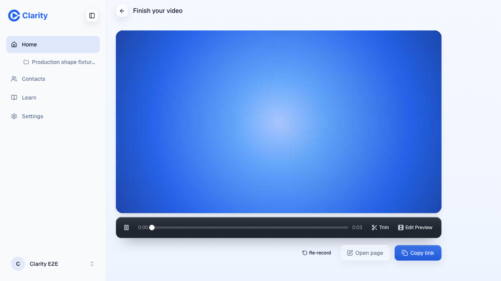
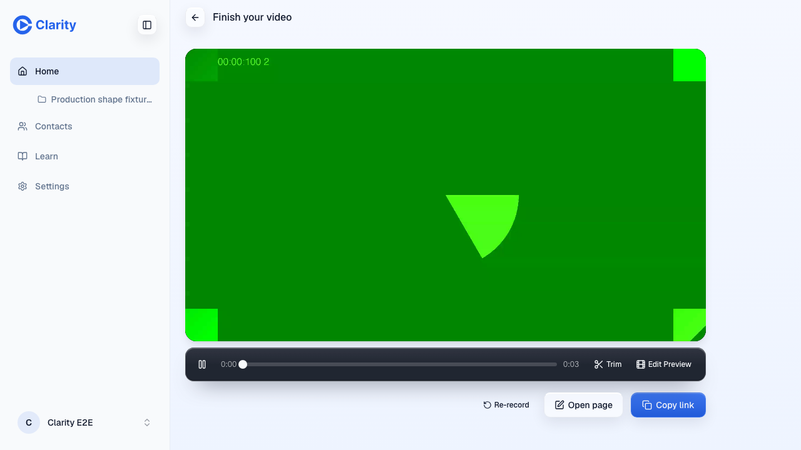
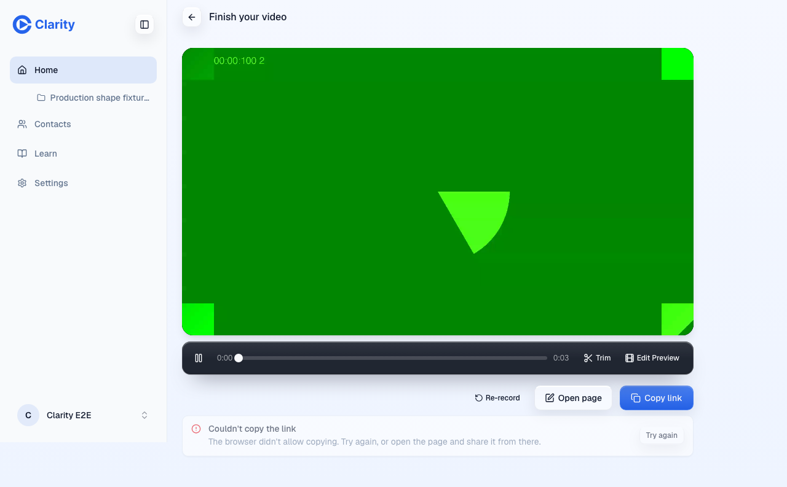
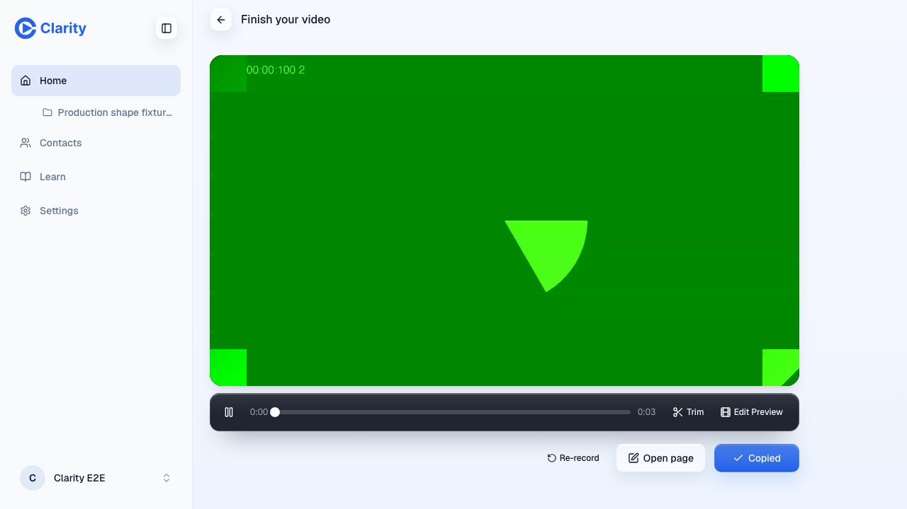
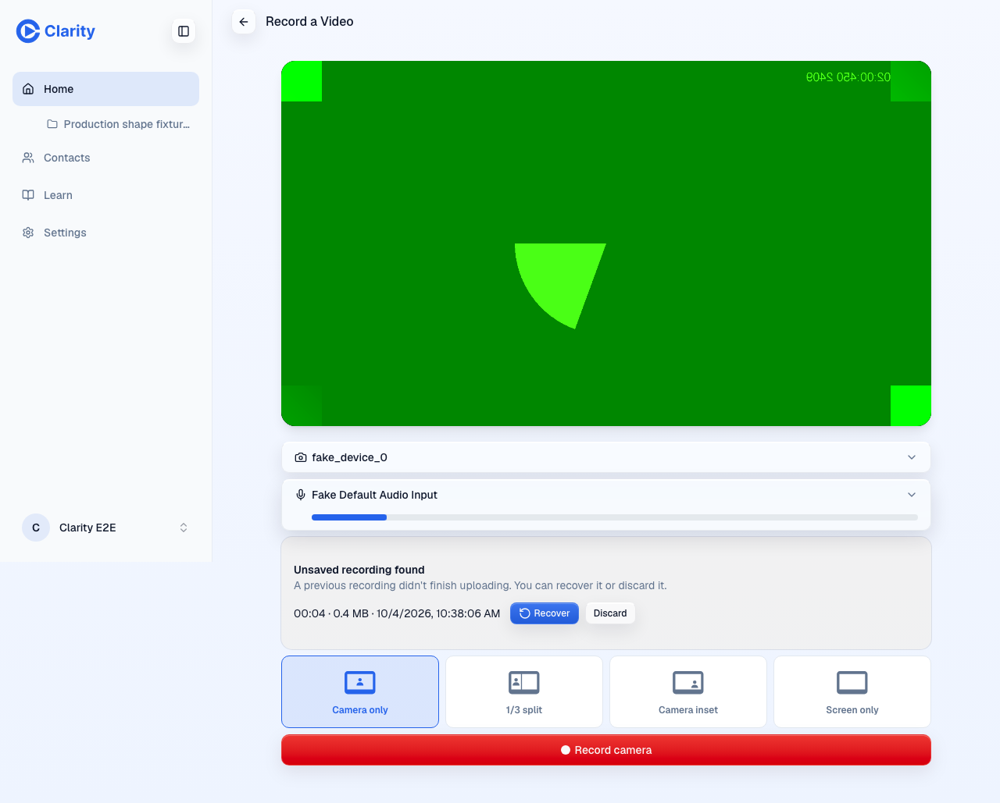
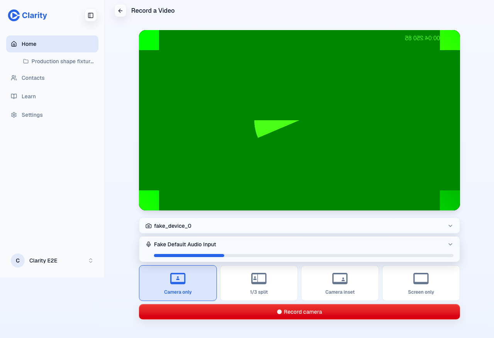

U11 recorder TakeState: preview proof
PR #1004 at 9cc52129a on https://pr-1004.clarity-video.workers.dev. Playwright, fake camera, userPro e2e account. 4 of 4 scenarios passed.
Steps logged
- link pending while grant held
- grant released, Copy link enabled
- copied
- Open page landed
- uploads failing
- uploads retried
- copy failed then Try again copied
- retried take opened its page
- recovery card after reload
- recovered take reached a ready link
- Open page waiting on held finish
- late finish after Re-record: stayed on /record
- late copy failure after Re-record: no row on the new take
Screens
Grant held: Copy link spinner, label unchanged, Open page disabled
Grant released: Copy link enabled
Mux PUTs aborted for 8 s: no terminal upload row, the sender keeps retrying
Clipboard refused: 'Couldn't copy the link' row with Try again
Try again copied: row gone, label shows Copied
Reload mid-take: recovery card offeredRecover: finish screen, no stale start row, link readyFinish request held: Open page busy
Re-record, then the old take's copy fails late: no row on the new take